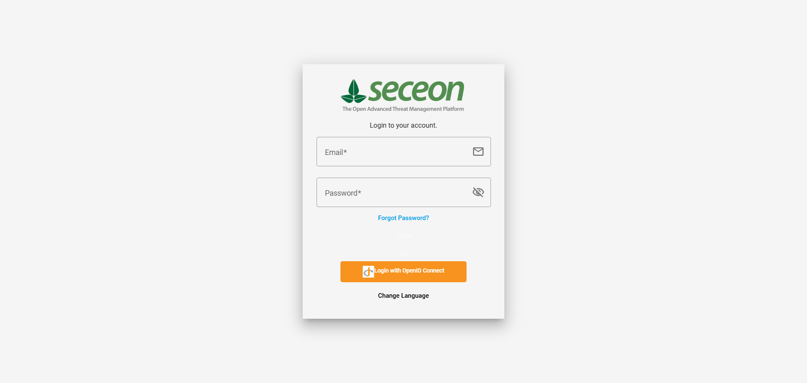
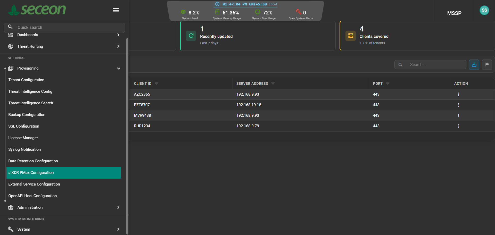
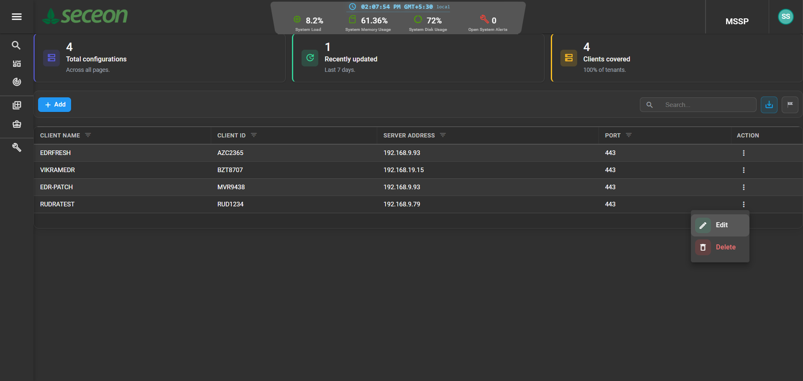
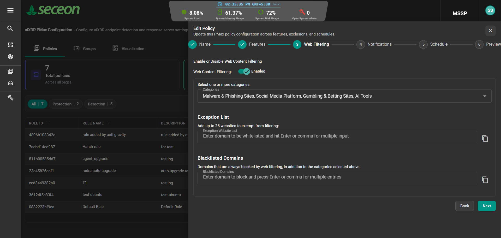
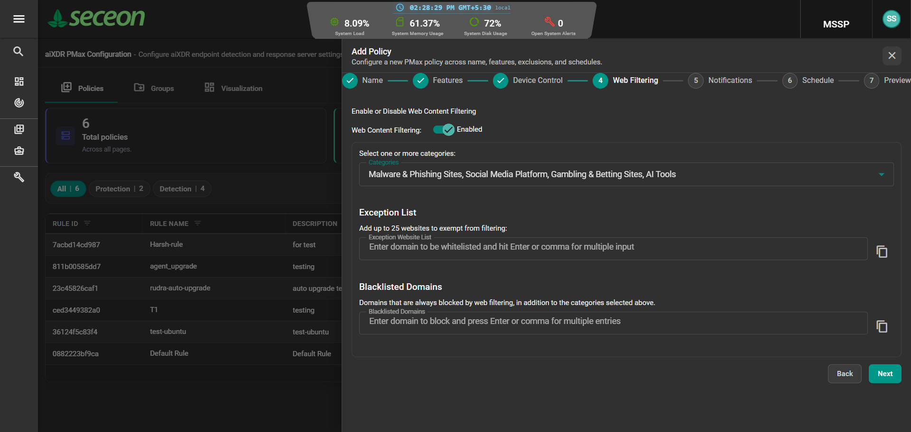
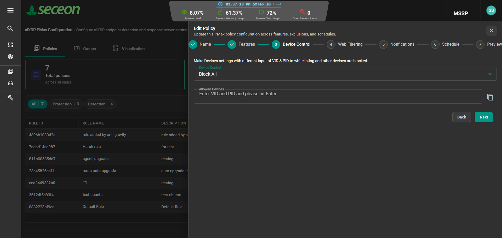

Specialized in EPP Aggressive Defense, Recursive Process Tree Validation, High-Precision Telemetry, and Indisputable Forensic Evidence Generation.
I build production-grade automated testing harnesses and objective telemetry instrumentation for enterprise Extended Detection and Response (XDR) platforms. From detonating living-off-the-land malware and benchmarking dual-process kill latencies to creating portable C# .NET resource monitors that resolve multi-tenant customer escalations with zero causal bias.
Lead SDET / Senior Test Automation Engineer
harsh.srivastava.sdet@gmail.comTest harnesses I architected in action. Toggle between real automated security scenarios to inspect the recursive process tree, structured JSON telemetry schema, and kernel action logs.
Malicious payload spawned via PowerShell with embedded EICAR. Aggressive Mode detects malicious child activity and recursively terminates BOTH child and parent processes.
Architected security testing frameworks, cross-platform telemetry instrumentation, and forensic evidence engines to harden enterprise endpoint protection.
Engineered an automated recursive validation harness to test Enterprise EPP Aggressive Mode. Solved the critical challenge of verifying that malicious child activities executed via living-off-the-land binaries trigger simultaneous parent AND child process termination to prevent malware respawning.
ProcessTreeValidator and ProcessNode tracking parent -> child -> grandchild trees via OS hooks.
When enterprise customers reported high CPU or memory utilization spikes, traditional QA lacked objective, tamper-proof evidence. Architected a 100% portable, zero-dependency Windows desktop tool and background sampler that captures 1-second normalized telemetry and produces Jira-ready forensic reports.
eppd, ExploitDP, EPP-Core, EDR-ADMP, EDR-Unified, ExtendedDefense, scan_win, win.ext, and DesktopAPP.
EPP-RES-yyyyMMdd-XXXX) only if CPU > 15% or RAM > 200MB sustained for ≥ 10 consecutive seconds.
Automated comprehensive end-to-end black-box testing across all 6 core Enterprise EPP endpoint protection modules. Validated the entire chain from local kernel driver intercept to Elasticsearch event telemetry ingestion across multiple tenant environments.
blocked_sample_test.exe) vs trusted path execution (epp_probe_service.exe) with false-positive suppression.
Conducted an end-to-end operational health inspection of a live Enterprise EDR / Cyber Correlation Engine (CCE) v12.3.3 cluster running 14 Docker microservices on Rocky Linux. Identified and remediated two critical bugs causing silent endpoint telemetry loss and containment failures.
cce-remediation container. Conflicting Python packages (websocket 0.2.1 vs websocket-client 0.57.0) caused from websocket import create_connection to fail, aborting all host isolation and quarantine actions.
xdr_log_result_bhg7200) where FreeGB was mapped as long but agent reported float decimals, silently dropping endpoint health data.
Constructed a secure, sandboxed automated test pipeline to detonate and evaluate 1,349 real malware samples against the EPP detection engine. Measured exact quarantine ratios, false-negative risk categories, and telemetry event propagation under heavy malware load.
Engineered cross-platform testing tools including a one-click deployable Linux Web Filter Tester (port 18081) with DNS sinkholing validation, and verified log correlation parsers for 16 enterprise security products integrated with the enterprise Cyber Correlation Engine (CCE).
Click any screenshot below to inspect the actual enterprise security console, policy drawer, Device Control rules, and Web Filtering configurations verified in my test suites.

Real-time threat status, quarantined host alerts, and telemetry stream verified across customer tenants.

Multi-step provisioning wizard tested for feature flags, agent schedules, and notification matrices.

Verification of rule deployment, regex pattern matching, and tenant inheritance logic.

Verification of feature enablement, client synchronization, and driver-level policy propagation.

Configuration of malware, gambling, adult, and social media category blocking with whitelist overrides.

Verification of full USB mass storage blocking and read-only mode policy enforcement on endpoints.
How I answer challenging architectural questions during technical interviews for Senior & Lead SDET roles in Cybersecurity and Distributed Systems.
Traditional sleep polling introduces artificial latency. In my setup_aggressive_mode_tool_v7.py engine, I instantiate high-precision Windows performance counters (or time.perf_counter()) at the exact millisecond the child process spawns. The harness hooks into the Windows Job Object or queries psutil at sub-millisecond intervals. I compute the exact delta between payload drop and process death signals, recording true kill latencies (e.g. 42.18 ms) while distinguishing parent vs. child termination order.
Aggressive Mode is prone to killing legitimate administrative tasks if detection rules are overly broad. To prevent false positives, I engineered a dual-battery test architecture: 10 Positive Tests (containing verified EICAR / credential dumping patterns that MUST be killed) evaluated alongside 5 Negative Tests (e.g. safe PowerShell executing Get-Date, safe CMD executing dir, safe Notepad, safe Ping) that MUST NEVER be killed. A test suite only passes if positive accuracy is 100% AND negative false-positive rate is 0%.
In enterprise customer environments, running third-party Python scripts requires installing runtimes, pip dependencies, or running heavy interpreted loops that consume CPU—thereby contaminating the very resource benchmark you are measuring! I architected XDRPerformanceMonitor.exe as a 100% portable, single-file self-contained binary in C# .NET 8 with zero runtime prerequisites, direct Win32 kernel API bindings, and batched SQLite WAL writes. It operates with under 0.2% background overhead and zero client impact.
When customers complain about high resource utilization, QA must provide indisputable, objective engineering evidence rather than speculative opinions. My tool enforces a strict Zero Causal Claims standard: it objectively records exact normalized timestamps, PID reuses, multi-core CPU math, and host baseline context (including external applications like Chrome or backup daemons) without claiming the security agent "caused" overall system degradation. This developer-ready evidence allows developers and support to resolve Jira issues without friction.
In our E2E BlackBox suite, testing doesn't stop at endpoint process termination. The test harness queries the OpenSearch / Elasticsearch REST API using dynamic tenant indices (e.g. xdrevents-rud1234-*) to verify that the generated telemetry event (e.g. Event ID 1286024 for Suspicious Web Access) was properly normalized, enriched with MITRE ATT&CK technique IDs (e.g. T1036.001), and matched the exact source host name and risk score.
During my live system health audit of the Enterprise EDR / CCE v12.3.3 stack (14 Docker containers on Rocky Linux), I inspected container logs and identified a fatal startup crash in cce-remediation. By analyzing the Python traceback, I found an import collision between legacy websocket 0.2.1 and websocket-client 0.57.0. I fixed the container build, and resolved an OpenSearch type mapping mismatch (long vs float on FreeGB) that had been silently dropping telemetry documents.
Hands-on mastery across cybersecurity disciplines, test automation engineering, programming languages, and distributed systems.
Continuous track record of elevating security product quality, driving automated releases, and architecting test infrastructure.
Focus on Operating Systems, Computer Networks, Distributed Computing, Database Management Systems, and Software Engineering methodologies.